건축설비기사 (2022-03-05 기출문제)
1과목: 건축일반
1. 건물에서의 열전달에 관련된 용어의 단위 중 옳지 않은 것은?
- 열전도율 : W/(m2 • K)
- 대류열전달율 : W/(m2 • K)
- 열저항 : (m2 • K)/W
- 열관류율 : W/(m2 • K)
(정답률: 65%)
2. 다음 그림 중 왕대공 지붕틀에 해당하는 것은?
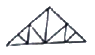
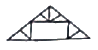
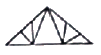
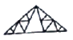
(정답률: 77%)

3. 철골구조의 데크플레이트에 사용되는 스터드 볼트의 주된 역할은?
- 축력 저항
- 전단력 저항
- 휨모멘트 저항
- 비틀림 저항
(정답률: 77%)
4. 잔향시간이란 음원으로부터 발생되는 소리가 정지했을 때 음압레벨이 몇 dB 감쇠하는데 소요되는 시간인가?
- 40 dB
- 55 dB
- 60 dB
- 70 dB
(정답률: 81%)
5. 주택의 식사실 형태에 관한 설명으로 옳은 것은?
- D : 부엌의 일부분에 식사실을 두는 형태이다.
- DK : 거실의 한 부분에 식탁을 설치하는 형태이다.
- LD : 거실과 부엌사이에 식사실을 설치하는 것이 일반적인 형태로 동선이 길어져 작업능률의 저하가 우려된다.
- LDK : 소규모 주택에서 많이 나타나는 형태로, 거실내애 부엌과 식사실을 설치한 것이다.
(정답률: 76%)
6. 사무소건물에 아트리움(atrium)을 도입하는 이유에 해당하지 않는 것은?
- 에너지 절약에 유리하다.
- 사무공간에 빛과 식물을 도입하여 자연을 체험하게 한다.
- 근로자들의 상호교류 및 정보교환의 장소를 제공한다.
- 보다 넓은 사무공간을 확보할 수 있다.
(정답률: 80%)
7. 유효온도에서 고려하지 않는 요소는?
- 기온
- 습도
- 기류
- 복사열
(정답률: 73%)
8. 공기환경측정과 관련된 측정방법이 잘못 연결된 것은?
- 유속측정 – 프로펠라 풍속계
- 압력측정 – 다이어프램 차압계
- 환기량측정 - 가스추적법
- 가스농도측정 – 피토우관
(정답률: 66%)
9. 상점의 판매형식 중 대면판매에 관한 설명으로 옳지 않은 것은?
- 진열 면적이 크고 상품의 충동적 구매와 선택이 용이하다.
- 상품에 대한 설명을 하기 편리하다.
- 판매원의 고정 위치를 정하기가 용이하다.
- 포장, 계산이 편리하다.
(정답률: 73%)
10. 반자의 세부 구조를 위에서부터 순서대로 옳게 나열한 것은?
- 달대받이 → 달대 → 반자틀받이 → 반자틀
- 달대받이 → 달대 → 반자틀 → 반자틀받이
- 달대 → 달대받이 → 반자틀받이 → 반자틀
- 달대 → 달대받이 → 반자틀 → 반자틀받이
(정답률: 65%)
11. 구조적 안전성을 고려할 때 가장 바람직한 코어형태는?
- 편코어형
- 독립코어형
- 중심코어형
- 양측코어형
(정답률: 75%)
12. SRC(철골철근콘크리트)조에 관한 설명으로 옳지 않은 것은?
- 철근콘크리트구조보다 내진성이 우수하다.
- 철골구조에 비해 거주성이 좋으며, 내화적이다.
- 철근콘크리트구조보다 건물의 중량을 크게 감소시킬 수 있다.
- 철골부분은 H형강이 많이 쓰인다.
(정답률: 71%)
13. 리조트 호텔 배치계획의 부지조건으로 옳지 않은 것은?
- 관광지의 성격을 충분히 이용할 수 있는 위치일 것
- 수량이 풍부하고, 수질이 좋은 수원이 있을 것
- 조망 및 주변경관의 조건이 좋을 것
- 도심지에 위치할 것
(정답률: 84%)
14. 종합병원의 병실계획에 관한 설명으로 옳지 않은 것은?
- 병실의 출입문의 폭은 침대가 통과할 수 있는 쪽이어야 한다.
- 병실의 창문 높이는 환자가 병상에서 외부를 전망할 수 있도록 하는 것이 좋다.
- 병실의 천장은 조도가 높은 마감재료를 사용한다.
- 환자마다 손이 다는 위치에 간호사 호출용 벨을 설치한다.
(정답률: 82%)
15. 학교건축 계획에 관한 설명으로 옳지 않은 것은?
- 관리부분의 배치는 학생들의 동선을 피하고 중앙에 가까운 위치가 좋다.
- 주차장은 되도록 학교 깊숙이 끌어들이지 않고 한족 귀퉁이에 배치하는 것이 바람직하다.
- 배치형식 중 집합형은 일종의 핑거플랜으로 일조 및 통풍 등 교실의 환경조건이 균등하며 구조계획이 간단하다.
- 운영방식 중 달톤형은 학급과 학생 구분을 없애고 학생들은 각자의 능력에 맞게 교과를 선택하며 일정한 교과가 끝나면 졸업한다.
(정답률: 75%)
16. 건축물 계획 시 사용하는 모듈(module)의 특징에 관한 설명으로 옳은 것은?
- 설계 작업의 다양화가 가능하다.
- 건축구성재의 소량생산이 용이해진다.
- 현장작업이 단순해진다.
- 건축구성재의 생산비가 높아진다.
(정답률: 71%)
17. 경사지를 적절하게 이용할 수 있으며, 각 호마다 전용의 정원 확보가 가능한 주택형식은?
- 테라스 하우스(Terrace house)
- 타운 하우스(Town house)
- 중정형 하우스(Patio house)
- 로 하우스(Row house)
(정답률: 75%)
18. 도서관 출납 시스템에 관한 설명으로 옳지 않은 것은?
- 개가식은 자유개가식, 안전개가식, 반개가식 등이 있다.
- 폐가식은 열람자 자신이 서가에서 자료를 꺼내서 관원의 확인을 받아 대출기록을 제출하는 방식이다.
- 자유개가식에서는 반납할 때 서가의 배열이 흩어지는 것을 방지하기 위해 반납대를 두는 경우도 있다.
- 폐가식은 방재, 방습 등을 위해 서고자체의 실내환경을 유지해야 한다.
(정답률: 81%)
19. 백화점에 설치하는 엘리베이터와 에스컬레이터에 관한 설명으로 옳지 않은 것은?
- 엘리베이터는 에스컬레이터에 비하여 소요먼적이 크나 승강이 병행되어 경제적이다.
- 에스컬레이터는 상하수송기관으로서 백화점 등에 주로 사용된다.
- 엘리베이터는 에스컬레이터에 비해서 수송이 계속적이지 못하고 수송량도 적은 편이다.
- 에스컬레이터는 설비비가 높아지나 윗층 매장의 활용도 증가로 판매액이 증가되어 설비비를 보충할 수 있다.
(정답률: 79%)
20. 사무소건축의 사무실 계획에 관한 설명으로 옳은 것은?
- 내부 기둥간격 결정 시 철근콘크리트구조는 철골구조에 비해 기둥간격을 길게 가져갈 수 있다.
- 기준층 계획 시 방화구획과 배연계획은 고려하지 않는다.
- 개방형 사무실은 개실형에 비해 불경기 때에도 임대자를 구하기 쉽다.
- 공조설비의 덕트는 기준층 높이를 결정하는 조건이 된다.
(정답률: 70%)
2과목: 위생설비
21. 급탕배관 방식 중 헤더 방식에 관한 설명으로 옳지 않은 것은?
- 슬리브 공법 채용 시 배관의 교환이 용이하다.
- 헤더로부터의 지관 도중에는 관이음을 사용할 필요가 없다.
- 선분기 방식에 비해 관의 표면적이 커서 손실열량이 많다.
- 지관을 소구경으로 배관하면 유속이 빠르게 되어 일반적으로 공기 정체가 발생하지 않는다.
(정답률: 44%)
22. 통기배관에 관한 설명으로 옳지 않은 것은?
- 통기관과 우수수직관은 겸용하는 것이 좋다.
- 각개통기방식에서는 반드시 통기수직관을 설치한다.
- 배수수직관의 상부는 연장하여 신정통기관으로 사용하며, 대기 중에 개구한다.
- 간접배수계통의 통기관은 다른 통기계통에 접속하지 말고 단독으로 대기 중에 개구한다.
(정답률: 64%)
23. 물의 성질에 관한 설명으로 옳지 않은 것은?
- 물은 비압축성 유체로 분류한다.
- 물은 1기압 4℃에서 비체적이 가장 작다.
- 4℃ 물을 가열하여 100℃ 물이 되면 그 부피가 팽창한다.
- 4℃ 물을 냉각하여 0℃ 얼음이 되면 그 부피가 수축한다.
(정답률: 69%)
24. 가스계량기는 전기점멸기와 최소 얼마 이상의 거리를 유지하여야 하는가?
- 30cm
- 45cm
- 60cm
- 90cm
(정답률: 62%)
25. 어느 배관에 20mm 소변기 2개, 25mm 대변기 2개가 연결될 때 이 배관의 관경은?
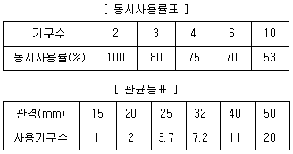
- 25mm
- 32mm
- 40mm
- 50mm
(정답률: 55%)
26. 수도 본관에서 수직 높이 6m 위치에 있는 기구를 사용하고자 할 때 수도 본관의 최저 필요 수압은? (단, 관내 마찰손실은 0.02MPa, 기구의 최소 필요압력은 0.07MPa 이다.)
- 0.09MPa
- 0.15MPa
- 0.69MPa
- 6.09MPa
(정답률: 58%)
27. 음료용 급수의 오염원인에 따른 방지대책으로 옳지 않은 것은?
- 정체수 : 적정한 탱크 용량으로 설계한다.
- 조류의 증식 : 투광성 재료로 탱크를 제작한다.
- 크로스 커넥션 : 각 계통마다의 배관을 색깔로 구분한다.
- 곤충 등의 침입 : 맨홀 및 오버플로우관의 관리를 철저히 한다.
(정답률: 77%)
28. 스위블형 신축이음쇠에 관한 설명으로 옳지 않은 것은?
- 굴곡부에서 압력강하를 가져온다.
- 신축량이 큰 배관에는 부적당하다.
- 설치비가 싸고 쉽게 조립할 수 있다.
- 고온, 고압의 옥외 배관에 주로 사용된다.
(정답률: 64%)
29. 동시사용률이 높은 건물의 급탕설비에 관한 설명으로 옳은 것은?
- 가열부하와 최대부하의 차이가 크다.
- 일반적으로 최대부하 사용시간이 짧다.
- 일반적으로 하루에 1시간 정도의 일정시간에만 온수가 사용된다.
- 가열기 능력을 크게 하고 저탕탱크는 소용량으로 계획하는 것이 효율적이다.
(정답률: 59%)
30. 내경이 50mm인 급수배관에 물이 1.5m/sec의 속도로 흐르고 있을 때, 체적유량은?
- 약 0.09m3/min
- 약 0.18m3/min
- 약 0.24m3/min
- 약 0.36m3/min
(정답률: 51%)
31. 배관 이음재료 중 시공한 후 배관 교체 등 수리를 편리하게 하기 위해 사용하는 것은?
- 티(tee)
- 부싱(bushing)
- 플랜지(flange)
- 리듀서(reducer)
(정답률: 72%)
32. 다음 중 간접배수로 하여야 하는 기기에 속하지 않는 것은?
- 세탁기
- 대변기
- 제빙기
- 식기세척기
(정답률: 74%)
33. 간접가열식 급탕방식에 관한 설명으로 옳은 것은?
- 고압보일러를 사용하여야 한다.
- 직접가열식에 비해 열효율이 높다.
- 가열 보일러는 난방용 보일러와 겸용할 수 있다.
- 직접가열식에 비해 보일러 내면에 스케일이 부착하기 쉽다.
(정답률: 65%)
34. 다음 중 배스트랩이 구비해야 할 조건과 가장 관계가 먼 것은?
- 가능한 한 구조가 간단할 것
- 배수 시에 자기세정이 가능할 것
- 가동부분이 있으며 가동부분에 봉수를 형성할 것
- 유효 봉수 깊이(50mm 이상 100mm 이하)를 가질 것
(정답률: 62%)
35. 급탕설비에 관한 설명으로 옳지 않은 것은?
- 급탕사용량을 기준으로 급탕순환펌프의 유량을 산정한다.
- 급탕부하단위수는 일반적으로 급수부하단위수의 3/4을 기준으로 한다.
- 급수압력과 급탕압력이 동일하도록 배관구성을 하는 것이 바람직하다.
- 급탕 배관시 수평주관은 상향 배관법에서는 급탕관은 앞올림구배로 하고 환탕관은 앞내림 구배로 한다.
(정답률: 50%)
36. 펌프의 양정에 관한 설명으로 옳지 않은 것은?
- 흡수면에서 펌프축 중심까지의 수직거리를 토출 실양정이라고 한다.
- 물이 흐를 때는 유속에 상당하는 에너지가 필요하며, 이 에너지를 속도수두라 한다.
- 흡수면으로부터 토출수면까지의 거리만큼 물이 올라가는데 필요한 에너지를 전양정이라고 한다.
- 물을 높은 곳으로 보내는 경우, 흡수면으로부터 토출수면까지의 수직거리를 실양정이라고 한다.
(정답률: 53%)
37. 급수방식 중 수도직결방식에 관한 설명으로 옳은 것은?
- 전력 차단 시 급수가 불가능하다.
- 3층 이상의 고층으로의 급수가 용이하다.
- 저수조가 있으므로 단수 시에도 급수가 가능하다.
- 수도 본관의 영향을 그대로 받아 수압변화가 심하다.
(정답률: 70%)
38. 다음 중 펌프의 분류상 터보형 펌프에 속하지 않는 것은?
- 마찰 펌프
- 사류 펌프
- 볼류트 펌프
- 디퓨져 펌프
(정답률: 51%)
39. 다음 중 트랩의 봉수 파괴 원인이 아닌 것은?
- 수격작용
- 증발현상
- 모세관현상
- 자기사이폰작용
(정답률: 62%)
40. 먹는물의 수질기준에 관한 설명으로 옳지 않은 것은?
- 색도는 5도를 넘지 아니할 것
- 수은은 0.01mg/L를 넘지 아니할 것
- 시안은 0.01mg/L를 넘지 아니할 것
- 수돗물의 경우 경도는 300mg/L를 넘지 아니할 것
(정답률: 58%)
3과목: 공기조화설비
41. 다음과 같은 조건에서 어느 작업장의 발생 현열량이 4000W 일 때 필요 환기량(m3/h)은?
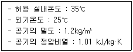
- 411.3
- 698.8
- 872.5
- 1188.1
(정답률: 57%)
42. 냉동기의 증발기에서 일어나는 상태변화에 관한 설명으로 옳지 않은 것은?
- 압력이 높아진다.
- 비엔탈피가 증가한다.
- 비엔트로피가 증가한다.
- 액체냉매가 기체냉매로 상이 변한다.
(정답률: 44%)
43. 스플릿 댐퍼에 관한 설명으로 옳지 않은 것은?
- 주덕트의 압력강하가 적다.
- 폐쇄용으로 사용이 곤란하다.
- 풍량조절의 정밀성이 우수하다.
- 덕트의 분기부에 설치하여 풍량조절용으로 사용된다.
(정답률: 47%)
44. 건구온도 33℃의 공기 20kg과 건구온도 25℃의 공기 80kg을 단열혼합하였을 때, 혼합공기의 건구온도는?
- 25.4℃
- 26.6℃
- 31.4℃
- 35.2℃
(정답률: 67%)
45. 증기트랩의 작동원리에 따른 분류 중 기계식 트랩에 속하는 것은?
- 버킷 트랩
- 열동식 트랩
- 벨로즈 트랩
- 바이메탈 트랩
(정답률: 52%)
46. 다음 중 배관계통의 방진을 위해 고려해야 할 사항과 가장 거리가 먼 것은?
- 진동원의 기기를 지지한다.
- 배관을 밀고 당기는 힘이 작용되지 않도록 배치한다.
- 소구경 배관에서는 플렉시블 호스를 사용하는 경우가 있다.
- 바닥, 벽 등을 관통하는 곳에서는 배관을 직접 건물에 고정한다.
(정답률: 67%)
47. 그림과 같은 전열교환기의 전열효율(η)을 올바르게 나타낸 것은? (단, 난방의 경우이며, X1, X2, X3, X4는 각 공기 상태의 엔탈피를 나타낸다.)
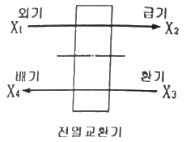
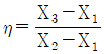
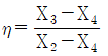
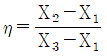
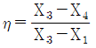
(정답률: 64%)
48. 전열교환기에 관한 설명으로 옳지 않은 것은?
- 공기 대 공기의 열교환기로서, 습도차에 의한 잠열은 교환 대상이 아니다.
- 공기방식의 중앙공조시스템이나 공장 등에서 환기에서의 에너지 회수방식으로 사용된다.
- 공조시스템에서 배기와 도입되는 외기와의 전열교환으로 공조기의 용량을 줄일 수 있다.
- 전열교환기를 사용한 공조시스템에서 중간기(봄, 가을)를 제외한 냉방기와 난방기의 열회수량은 실내·외의 온도차가 클수록 많다.
(정답률: 56%)
49. 습공기에 관한 설명으로 옳은 것은?
- 습구온도는 항상 건구온도보다 높다.
- 습공기를 가열하면 상대습도가 낮아진다.
- 건구온도와 습구온도의 차가 클수록 습도는 높아진다.
- 동일 건구온도에서 상대습도가 높을수록 비체적은 작아진다.
(정답률: 65%)
50. 정풍량 단일덕트방식에 관한 설명으로 옳지 않은 것은?
- 전공기방식에 속한다.
- 2중덕트방식에 비해 에너지 절약적이다.
- 냉풍과 온풍을 혼합하는 혼합상자가 필요없다.
- 각 실이나 존의 부하변동에 즉시 대응할 수 있다.
(정답률: 58%)
51. 다음 중 현열로만 구성된 냉방부하의 종류는?
- 인체의 발생열량
- 유리로부터의 취득열량
- 극간풍에 의한 취득열량
- 외기의 도이으로 인한 취득열량
(정답률: 71%)
52. 온수난방에 관한 설명으로 옳지 않은 것은?
- 증기난방에 비해 열용량이 작다.
- 증기난방에 비해 예열 시간이 길다.
- 한랭 시 난방을 정지하였을 경우 동결의 우려가 있다.
- 현열을 이용한 난방이므로 증기난방에 비해 쾌감도가 높다.
(정답률: 58%)
53. 다음과 같은 조건에서 난방 시 도입 외기량이 500kg/h 일 때 도입외기에 의한 외기부하는?
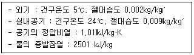
- 약 5097W
- 약 6088W
- 약 7418W
- 약 9936W
(정답률: 35%)
54. 비아패스형 변풍량 유닛(VAV unit)에 관한 설명으로 옳지 않은 것은?
- 유닛의 소음발생이 적다.
- 송풍덕트 내의 정압제어가 필요없다.
- 덕트계통의 증설이나 개설에 대한 적응성이 적다.
- 천장 내의 조명으로 인한 발생열을 제거할 수 없다.
(정답률: 52%)
55. 가습장치로 G(kg/h)의 공기를 가습할 때 가습량 L(kg/h)은? (단, 가습장치 입출구 공기의 절대습도는 X1, X2(kg/kg′)이고 가습효율은 100% 이다.)
- L = G(X2 - X1)
- L = 1.2G(X2 - X1)
- L = 717G(X2 - X1)
- L = 597.5G(X2 - X1)
(정답률: 54%)
56. 배관설계에 관한 설명으로 옳은 것은?
- 직관부의 마찰저항은 관경에 비례한다.
- 글로브 밸브는 슬루스 밸브에 비해 마찰저항이 적어 지름이 큰 배관에 많이 사용한다.
- 배관 내의 유속이 낮으면 공사비는 절감되나 마찰저항이 커져서 펌프 소요동력이 증가한다.
- 수배관의 관경은 마찰손실선도에서 유량, 단위 길이당 마찰손실, 유속 중 2개가 정해지면 결정할 수 있다.
(정답률: 48%)
57. 다음 중 상당외기온도 산정 시 고려하지 않는 것은?
- 외기온도
- 일사의 세기
- 구조체의 열관류율
- 표면재료의 일사흡수율
(정답률: 48%)
58. 고속덕트에 관한 설명으로 옳지 않은 것은?
- 소음과 진동 발생이 크다.
- 송풍기의 동력이 적게 든다.
- 덕트재료를 절약할 수 있다.
- 덕트설치 공간을 적게 차지한다.
(정답률: 63%)
59. 열펌프(heat pump)에 관한 설명으로 옳지 않은 것은?
- 공기조화에서 냉방 또는 난방기능을 수행한다.
- 냉동사이클에서 응축기의 방열량을 이용하기 위한 것이다.
- EHP(Electric Heat Pump)는 흡수식 냉동기의 원리를 이용한 열펌프이다.
- 냉동기를 냉각목적으로 할 경우의 성적계수보다 열펌프로 사용될 경우의 성적계수가 크다.
(정답률: 43%)
60. 습공기 선도의 표시사항에 속하지 않는 것은?
- 엔탈피
- 현열비
- 상대습도
- 엔트로피
(정답률: 57%)
4과목: 소방 및 전기설비
61. 4[H]의 코일에 5[A]의 직류전류가 흐를 때 코일에 축적되는 에너지는?
- 10[J]
- 20[J]
- 50[J]
- 100[J]
(정답률: 41%)
62. 소방시설 관련 설비의 설치 위치에 관한 설명으로 옳지 않은 것은?
- 옥내소화전 방수구는 바닥으로부터의 높이가 1.5m 이하가 되도록 설치한다.
- 소화기구(자동확산소화기 제외)는 바닥으로부터 높이 1.5m 이하의 곳에 비치한다.
- 연결살수설비의 송수구는 지면으로부터 높이가 0.5m 이상 1.5m 이하의 위치에 설치한다.
- 연결송수관설비의 송수구는 지면으로부터 높이가 0.5m 이상 1m 이하의 위치에 설치한다.
(정답률: 49%)
63. 피뢰침에 근접한 뇌격을 흡인하여 전극으로 확실하게 방류하기 위한 요구조건으로 옳은 것은?
- 도체저항이 커야 한다.
- 접촉저항이 커야 한다.
- 접지저항이 작아야 한다.
- 돌침의 보호각이 작아야 한다.
(정답률: 55%)
64. 특정소방대상물의 어느 층에 옥내소화전이 2개가 설치되어 2개의 옥내소화전을 동시에 사용할 경우 각 소화전의 노즐선단에서의 방수압력과 방수량은 최소 얼마 이상이어야 하는가?
- 방수압력 0.13MPa, 방수량 100ℓ/min
- 방수압력 0.13MPa, 방수량 130ℓ/min
- 방수압력 0.17MPa, 방수량 100ℓ/min
- 방수압력 0.17MPa, 방수량 130ℓ/min
(정답률: 54%)
65. 다음 중 피드백 제어방식의 제어동작에 의한 분류에 속하지 않는 것은?
- 비례동작
- 적분동작
- 정지동작
- 다위치동작
(정답률: 50%)
66. 옥내소화전설비에서 충압펌프의 주된 사용 목적은?
- 주펌프의 토출량 증대
- 전력 공급 차단에 따른 주펌프 정지 시 비상운전
- 주펌프 정지 시 지속적 운전으로 배관의 동결 방지
- 배관 내 압력손실에 따른 주펌프의 빈번한 기동 방지
(정답률: 66%)
67. 다음 설명에 알맞은 축전지의 사용 중 충전방식은?
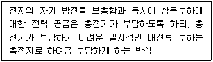
- 보통충전
- 부동충전
- 급속충전
- 균등충전
(정답률: 63%)
68. 선간전압 220[V], 전류 70[A], 소비전력 18[kW]인 3상 유도전동기의 역률은?
- 0.67
- 0.72
- 0.75
- 1.17
(정답률: 37%)
69. 다음 중 피드백 제어 시스템에서 반드시 필요한 장치는?
- 감도를 향상시키는 장치
- 안정도를 향상시키는 장치
- 입력과 출력을 비교하는 장치
- 응답속도를 빠르게 하는 장치
(정답률: 67%)
70. 20[Ω]의 저항에 또 다른 저항 R[Ω]을 병렬로 접속하였더니, 두 개의 합성 저항이 4[Ω]이 되었다. 이 때 저항 R는 몇 [Ω] 인가?
- 2
- 5
- 10
- 15
(정답률: 66%)
71. 역률이 나쁘다는 결점이 있으나, 구조와 취급이 간단하여 건축설비에서 가장 널리 사용되고 있는 전동기는?
- 동기전동기
- 분권전동기
- 직권전동기
- 유도전동기
(정답률: 64%)
72. 방송공동수신설비의 일반적 구성에 속하지 않는 것은?
- 월패드
- 증폭기
- 분배기
- 수신안테나
(정답률: 64%)
73. 인접 건물에 대한 연소확대 방지 목적으로 사용되는 소화설비는?
- 옥내소화전설비
- 옥외소화전설비
- 스프링클러설비
- 물분무소화설비
(정답률: 56%)
74. “회로내의 임의의 한점에 들어오고 나가는 전류의 합은 같다”와 관련된 법칙으로 전류의 법칙이라고도 불리는 것은?
- 오옴의 법칙
- 키르히호프의 제1법칙
- 키르히호프의 제2법칙
- 앙페르의 오른나사의 법칙
(정답률: 68%)
75. 정전용량이 C1과 C2인 콘덴서를 병렬로 접속시켰을 때 합성정전용량은?
- C1+C2
- 1/(C1+C2)
- 1/C1+1/C2
- (C1×C2)/(C1+C2)
(정답률: 61%)
76. 수용장소의 총부하설비용량에 대한 최대수요전력의 비율을 백분율로 나타낸 것은?
- 역률
- 부등률
- 전류율
- 수용률
(정답률: 70%)
77. 전압과 전류의 위상차 θ가 있는 경우, 교류전력 중 유효전력을 나타낸 것은?
- VI[W]
- VI[VA]
- VIcosθ[W]
- VIsinθ[VAR]
(정답률: 61%)
78. 인터폰의 통화망 구성방식에 따른 분류에 속하지 않는 것은?
- 모자식
- 상호식
- 복합식
- 수정식
(정답률: 58%)
79. 가연물질 주변의 공기 중 산소의 농도를 낮추어 소화하는 방법은?
- 냉각소화
- 제거소화
- 질식소화
- 부촉매소화
(정답률: 68%)
80. 어느 사무실의 크기가 폭 12m, 안길이 10m이고 피조면에서 광원까지의 높이가 2.75m 인 경우, 이 사무실의 실지수는?
- 0.34
- 1.98
- 2.86
- 4.36
(정답률: 42%)
5과목: 건축설비관계법규
81. 건축물의 에너지절약설계기준에 따른 기계부문의 권장사항으로 옳지 않은 것은?
- 열원설비는 부분부하 및 전부하 운전효율이 좋은 것을 선정한다.
- 냉방설비의 용량계산을 위한 설계기준 실내온도는 28℃를 기준으로 한다.
- 난방설비의 용량계산을 위한 설계기준 실내온도는 22℃를 기준으로 한다.
- 위생설비 급탕용 저탕조의 설계온도는 55℃이하로 하고 필요한 경우에는 부스터히터 등으로 승온하여 사용한다.
(정답률: 58%)
82. 다음은 소방시설의 내진설계에 관한 기준 내용이다. 밑줄 친 대통령령으로 정하는 소방시설에 속하지 않는 것은?
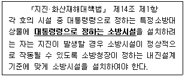
- 옥내소화전설비
- 스프링클러설비
- 자동화재탐지설비
- 물분무등소화설비
(정답률: 58%)
83. 다음은 숙박시설이 있는 특정소방대상물의 경우 갖추어야 하는 소방시설 등의 종류를 결정할 때 고려하여야 하는 수용인원의 산정방법에 관한 기준 내용이다. ( ) 안에 알맞은 것은? (단, 침대가 없는 숙박시설의 경우)
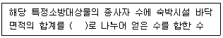
- 3m2
- 4m2
- 5m2
- 6m2
(정답률: 51%)
84. 문화 및 집회시설 중 공연장의 개별 관람실로부터의 출구의 설치에 관한 기준 내용으로 옳지 않은 것은? (단, 개별 관람실의 바닥면적은 300m2 이다.)
- 개별 관람실의 출구는 관람실별로 2개소 이상 설치하여야 한다.
- 개별 관람실의 각 출구의 유효너비는 1.5m 이상으로 하여야 한다.
- 관람실로부터 바깥쪽으로의 출구로 쓰이는 문은 안여닫이로 해서는 안 된다.
- 개별 관람식 출구의 유효너비의 합계는 최소 3.6m 이상으로 하여야 한다.
(정답률: 57%)
85. 다음 중 철근콘크리트조로서 두께와 상관없이 내화구조로 인정되는 것에 속하지 않는 것은?
- 보
- 계단
- 바닥
- 지붕
(정답률: 46%)
86. 건축물의 냉방설비에 대한 설치 및 설계기준상 다음과 같이 정의되는 것은?
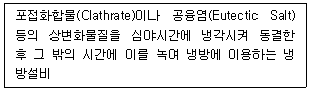
- 빙축열식 냉방설비
- 수축열식 냉방설비
- 잠열축열식 냉방설비
- 현열축열식 냉방설비
(정답률: 49%)
87. 각 층의 거실면적이 3000m2이며 층수가 12층인 호텔 건축물에 설치하여야 하는 승용승강기의 최소 대수는? (단, 24인승 승강기를 설치하는 경우)
- 3대
- 4대
- 5대
- 6대
(정답률: 34%)
88. 소리를 차단하는데 장애가 되는 부분이 없도록 건축물의 피난·방화구조 등의 기준에 관한 규칙에서 정하는 구조로 하여야 하는 대상에 속하지 않는 것은?
- 숙박시설의 객실 간 경계벽
- 의료시설의 병실 간 경계벽
- 업무시설의 사무실 간 경계벽
- 교육연구시설 중 학교의 교실 간 경계벽
(정답률: 63%)
89. 다음의 용도변경 중 허가 대상에 속하는 것은?
- 문화 및 집회시설에서 업무시설로의 용도변경
- 판매시설에서 문화 및 집회시설로의 용도변경
- 방송통신시설에서 교육연구시설로의 용도변경
- 자동차관련시설에서 문화 및 집회시설로의 용도변경
(정답률: 47%)
90. 장례식장의 용도로 쓰이는 건축물의 집회실로서 그 바닥면적이 200m2인 경우 반자의 높이는 최소 얼마 이상이어야 하는가? (단, 기계환기장치를 설치하지 않은 경우)
- 2.1m
- 2.4m
- 2.7m
- 4.0m
(정답률: 52%)
91. 건축허가신청에 필요한 설계도서에 속하지 않는 것은?
- 배치도
- 동선도
- 단면도
- 건축계획서
(정답률: 62%)
92. 특별피난계단에 설치하는 배연설비의 구조에 관한 기준 내용으로 옳지 않은 것은?
- 배연구 및 배연풍도는 불연재료로 할 것
- 배연구가 외기에 접하지 아니하는 경우네는 배연기를 설치할 것
- 배연구에 설치하는 수동개방장치 또는 자동개방장치는 손으로도 열고 닫을 수 있도록 할 것
- 배연구는 평상시에는 닫힌 상태를 유지하고 연 경우에는 배연의 의한 기류로인하여 닫히도록 할 것
(정답률: 64%)
93. 특정소방대상물이 문화 및 집회시설 중 공연장인 경우 모든 층에 스프링클러설비를 설치하여야 하는 수용인원 기준은?
- 수용인원이 50명 이상인 것
- 수용인원이 100명 이상인 것
- 수용인원이 150명 이상인 것
- 수용인원이 200명 이상인 것
(정답률: 61%)
94. 세대수가 5세대인 주거용 건축물에 설치하는 음용수 급수관의 지름은 최소 얼마 이상으로 하여야 하는가?
- 20mm
- 25mm
- 32mm
- 40mm
(정답률: 56%)
95. 건축물 지하층에 설치하는 비상탈출구에 관한 기준 내용으로 옳지 않은 것은? (단, 주택이 아닌 경우)
- 비상탈출구는 출입구로부터 2m 이상 떨어진 곳에 설치할 것
- 비상탈출구의 유효너비는 0.75m 이상으로 하고, 유효높이는 1.5m 이상으로 할 것
- 비상탈출구의 문은 피난방향으로 열리도록 하고, 실내에서 항상 열 수 있는 구조라 할 것
- 비상탈출구는 피난층 또는 지상으로 통하는 복도나 직통계단에 직접 접하거나 통로 등으로 연결될 수 있도록 설치할 것
(정답률: 50%)
96. 건축법령상 다음과 같이 정의되는 주택의 종류는?
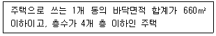
- 연립주택
- 단독주택
- 다가구주택
- 다세대주택
(정답률: 57%)
97. 건축물에 건축설비를 설치하는 경우 관계전문기술자의 협력을 받아야 하는 대상 건축물의 연면적 기준은? (단, 창고시설 제외)
- 1000m2 이상
- 2000m2 이상
- 5000m2 이상
- 10000m2 이상
(정답률: 50%)
98. 다음의 소방시설 중 경보설비에 속하지 않는 것은?
- 비상방송설비
- 자동화재탐지설비
- 자동화재속보설비
- 무선통신보조설비
(정답률: 62%)
99. 건축물의 설비기준 등에 관한 규칙에 따라 피뢰설비를 설치하여야 하는 대상 건축물의 높이 기준은?
- 10m 이상
- 15m 이상
- 20m 이상
- 30m 이상
(정답률: 69%)
100. 다음은 건축법상 지하층의 정의이다. ( ) 안에 알맞은 것은?
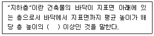
- 2분의 1
- 3분의 1
- 4분의 1
- 3분의 2
(정답률: 71%)